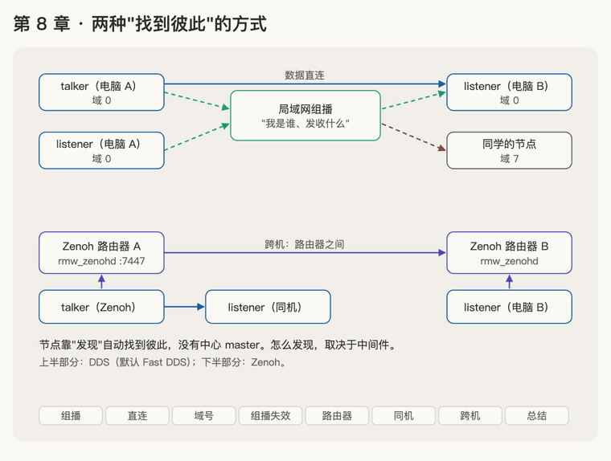
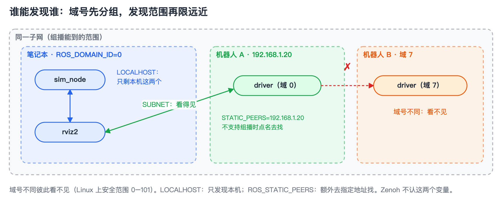
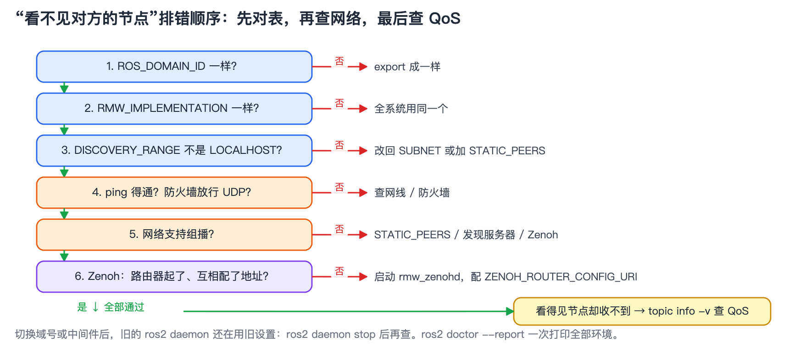

第 8 章 · 中间件、发现与网络
本地运行
git clone https://github.com/wikieden/ros2-from-scratch
cd ros2-from-scratch/code/notebooks
pip install jupyterlab torch numpy
jupyter lab ch08_domain_ports.ipynb也可以下载后直接用 VS Code 打开 .ipynb 运行。需要 GPU 的章节在 Colab 里选「代码执行程序 → 更改运行时类型 → GPU」。
本章回答：同一个 Wi-Fi 下两组人都在跑 ROS 2，怎么不互相串台？机器人和笔记本为什么有时能互相看见、有时不能？DDS 和 Zenoh 有什么不同，怎么换？
ros2 node list为什么有时会显示已经关掉的节点？
讲解日期：2026-11-13 · 上一章：第 7 章 QoS · 下一章：第 9 章 Executor 与回调组
对应原文：ros2_documentation/source/ROS-Framework/nodes/About-Domain-ID.rstL40、L46–L50、L65–L66、L88–L110；ros2_documentation/source/Developer-Tools/Launch/Improved-Dynamic-Discovery.rst；ros2_documentation/source/Get-Started/Installation/RMW-Implementations/Non-DDS-Implementations/Working-with-Zenoh.rst；ecosystem/rmw_zenoh/docs/design.md（路径相对ros2/materials/）
对应 study-plan 阶段 C2、C3，动手里程碑 R-M3 后半（Fast DDS 与 Zenoh 对比）。
本章缩写：DDS = Data Distribution Service（数据 / 分发 / 服务）；RMW = ROS MiddleWare（ROS 中间件）；RTPS = Real-Time Publish-Subscribe（实时 / 发布 / 订阅：DDS 的线上协议）；ID = identifier（编号）；IP = Internet Protocol（网际 / 协议：网络地址）；VPN = Virtual Private Network（虚拟 / 专用 / 网络）；SHM = Shared Memory（共享内存）。全部缩写见 附录 · 缩写与术语表
本章先看总图，再分 3 步：
| 步 | 内容 | 状态 |
|---|---|---|
| 0 | 总图：DDS 组播自动发现 vs Zenoh 路由器 | ✅ |
| 1 | Domain ID 与发现范围：怎么分组、怎么限定 | ✅ |
| 2 | 换中间件：Fast DDS（默认）、Cyclone DDS、Zenoh | ✅ |
| 3 | 网络排错清单与 ros2 daemon | ✅ |
讲解
总图 · 两种"找到彼此"的方式

可交互版：animations/08-discovery.html（内置浏览器：http://localhost:8340/08-discovery.html）。
第 1 章说过，节点靠"发现"自动找到彼此，没有 ROS 1 那样的 master。具体怎么"发现"，取决于用哪个中间件：
| DDS（Fast DDS 默认、Cyclone DDS 等） | Zenoh（rmw_zenoh_cpp） |
|
|---|---|---|
| 怎么发现 | 每个节点往局域网组播"我是谁、发收什么"，人人都听 | 每个节点连本机的 Zenoh 路由器，路由器把各节点的地址转告给别的节点（gossip，"传话"） |
| 要不要额外进程 | 不要 | 要先启动路由器 ros2 run rmw_zenoh_cpp rmw_zenohd |
| 数据走哪 | 节点之间直连 | 同机节点之间直连；跨机经路由器 |
| 优点 | 零配置，开箱即用 | 不依赖组播：Wi-Fi、容器、跨网段更省心；发现流量小 |
| 缺点 | 节点多时发现流量大；很多 Wi-Fi / 容器 / 云网络不支持组播 | 多一个要维护的进程 |
类比：DDS 是在大厅里大声喊"我是张三，我卖苹果"，人人都听得见；Zenoh 是每层楼有个前台（路由器），新来的人到前台登记，前台把名片转给需要的人。
第 1 步 · Domain ID 与发现范围
依据：ROS-Framework/nodes/About-Domain-ID.rst（下称"域文档"）、Developer-Tools/Launch/Improved-Dynamic-Discovery.rst（下称"发现范围"）。
Domain ID：同一张网上的"频道号"。 同一个域里的节点能互相发现和通信，不同域的节点互相看不见。默认所有节点都在域 0。实验室里几组人共用一个 Wi-Fi，每组设一个不同的号，就不会串台（域文档 Overview）：
export ROS_DOMAIN_ID=7 # 同一组的所有终端、所有电脑都设成一样
取值范围：DDS 用域号算出 UDP 端口号，端口最大 65535，所以域号理论上限是 232。为了避开操作系统的临时端口，Linux 上安全的范围是 0–101（以及 215–232），macOS 是 0–166；不想细算就选 0–101（域文档 "Choosing a domain ID" 两节）。
发现范围：默认会尝试发现同一子网里所有电脑上的节点。可以用两个环境变量限定（发现范围一文）：
| 变量 | 取值 | 意思 |
|---|---|---|
ROS_AUTOMATIC_DISCOVERY_RANGE |
SUBNET（默认） |
能组播到的都发现 |
LOCALHOST |
只发现本机的节点 | |
OFF |
谁都不发现，本机也不 | |
SYSTEM_DEFAULT |
不改中间件自己的设置 | |
ROS_STATIC_PEERS |
用 ; 分隔的地址列表 |
额外去这些指定的电脑上找节点 |
典型用法：在笔记本上做仿真，不想被同网络的真机器人干扰，设 ROS_AUTOMATIC_DISCOVERY_RANGE=LOCALHOST。要连某一台机器人，再加 ROS_STATIC_PEERS=192.168.1.20。
注意：这两个变量 Zenoh 不支持（发现范围一文的提示），Zenoh 用自己的配置文件控制连接。
Fast DDS 的发现服务器：节点很多、或网络不支持组播时，还可以让 Fast DDS 改成"集中发现"：启动一个发现服务器，节点都向它登记（Developer-Tools/Launch/Discovery-Server/Discovery-Server.rst）。思路和 Zenoh 路由器类似。

图 8-1 · 谁能发现谁：域号不同互相看不见；发现范围 LOCALHOST 只看本机，STATIC_PEERS 点名去找。
第 2 步 · 换中间件
依据：Get-Started/Installation/RMW-Implementations.rst 及其子页、ecosystem/rmw_zenoh/README.md 与 docs/design.md。
第 1 章总图 1 的 rmw "插座"在这里派上用场：换中间件不改代码，只设一个环境变量（Working-with-multiple-RMW-implementations.rst 第 46 行）：
export RMW_IMPLEMENTATION=rmw_fastrtps_cpp # Fast DDS（默认）
export RMW_IMPLEMENTATION=rmw_cyclonedds_cpp # Cyclone DDS
export RMW_IMPLEMENTATION=rmw_connextdds # RTI Connext DDS（商业）
export RMW_IMPLEMENTATION=rmw_zenoh_cpp # Zenoh
要点：
- 同一个系统里所有节点最好用同一个中间件。 不同 DDS 厂商之间理论上能通过 RTPS 协议互通，但细节（比如服务）常有问题；DDS 和 Zenoh 之间完全不通。
- 换之前用
apt install ros-lyrical-rmw-<名字>装好对应包。
用 Zenoh 的步骤（Working-with-Zenoh.rst）：
sudo apt install ros-lyrical-rmw-zenoh-cpp
# 终端 1：启动路由器
ros2 run rmw_zenoh_cpp rmw_zenohd
# 终端 2、3：
export RMW_IMPLEMENTATION=rmw_zenoh_cpp
ros2 run demo_nodes_cpp talker
ros2 run demo_nodes_cpp listener
不启动路由器，节点就互相发现不了：默认配置里关掉了组播发现，发现信息全靠路由器转告（Working-with-Zenoh.rst 的提示）。按 rmw_zenoh 的设计文档：
- 路由器监听本机 TCP 7447 端口；各节点的 Zenoh 会话通过本机回环连到它；
- 路由器只负责发现和跨机转发；同一台电脑上的节点之间直接通信，不经过路由器；
- 故意不用 UDP 组播，就是为了避开"网络 / 系统 / 容器配置不对导致组播失效"的老问题（design.md "Default Configuration" 一节）。
- 环境变量
ZENOH_ROUTER_CHECK_ATTEMPTS控制启动时等不等路由器（README "Checking for a Zenoh router"）。
怎么选：单机或有线局域网，默认 Fast DDS 就够；Wi-Fi、多网段、容器、和云端通信，Zenoh 往往更省心。R-M3 后半就是两个都跑一遍，用 ros2 topic hz / bw 对比。
第 3 步 · 网络排错清单与 ros2 daemon
"看不见对方的节点"按这个顺序查：
- 两边
echo $ROS_DOMAIN_ID一样吗？ - 两边
echo $RMW_IMPLEMENTATION一样吗？ ROS_AUTOMATIC_DISCOVERY_RANGE是不是被设成了LOCALHOST？- 两台电脑能
ping通吗？防火墙放行 UDP 了吗？ - 网络支持组播吗？（很多 Wi-Fi 路由器、VPN、Docker 默认网络不支持）不支持就用
ROS_STATIC_PEERS、发现服务器或 Zenoh。 - 用 Zenoh 时：路由器起了吗？跨机时两边路由器的配置文件里互相写了连接地址吗（
ZENOH_ROUTER_CONFIG_URI指定配置文件）？ - 能看见节点但收不到数据：回到第 7 章，
topic info -v查 QoS。
ros2 doctor --report 会打印网络、中间件、环境变量等信息，Lyrical 起还包括动作、服务（Release-Lyrical-Luth.rst 对应一节）。官方原话说可以把这个报告贴进 issue 或给 AI 助手帮你排错。
ros2 daemon：命令行工具背后的缓存。 ros2 node list、ros2 topic list 第一次运行时会在后台启动一个守护进程（daemon），它一直挂在网络上收集"谁在线"，之后的命令直接问它，所以很快。副作用是：
- 有时会显示已经关掉的节点（缓存还没更新）；
- 切换了
ROS_DOMAIN_ID或中间件后，旧的 daemon 还在用旧设置。
这时运行 ros2 daemon stop，下次命令会自动起一个新的（rmw_zenoh README 的测试一节也先 ros2 daemon stop）。

图 8-2 · “看不见对方的节点”按这个顺序查：先对域号和中间件，再查网络和组播，最后查 QoS。
和本仓库的连接：机器人 + 远程 GPU 服务器跑 VLA 推理时，跨网络传图像，选 Zenoh 或至少用 ROS_STATIC_PEERS 指定对端，比依赖组播稳得多。
练习与作答记录
练习 8-1（第 1 步）：实验室里你和同学都在跑 turtlesim，你的乌龟被同学的遥控指令控制了。最简单的修法是什么？两人各要做什么？
- 作答：（待作答）
练习 8-2（第 2 步）：你把 RMW_IMPLEMENTATION 设成 rmw_zenoh_cpp，启动了 talker 和 listener，但 listener 什么也没收到。最可能漏了什么？
- 作答：（待作答）
练习 8-3（第 3 步）：你改了 ROS_DOMAIN_ID 后，ros2 node list 还是显示改之前那个域里的节点。为什么？怎么办？
- 作答：（待作答）
口诀
- 分组：同号同频道，默认是 0；安全取 0 到 101。
- 范围：LOCALHOST 只看本机，STATIC_PEERS 点名找人。
- 中间件：一个环境变量换插头，全系统用同一个；Zenoh 先起路由器。
- 排错：域号、中间件、范围、ping、组播、QoS；缓存不对 daemon stop。
本章复习卡片编号
R22–R23，见 ../review.md。
附录 · 延伸阅读
留给以后深入学习用，不影响本章主线。★ 是建议先读的。
materials/指ros2/materials/；不带前缀的路径在materials/ros2_documentation/source/下（design/、ecosystem/开头的在materials/下）；...表示省略了和上一条相同的目录。
推荐阅读
| 读什么 | 读哪里 | 读它为了什么 |
|---|---|---|
★ About-Domain-ID.rst |
materials/ros2_documentation/source/ROS-Framework/nodes/About-Domain-ID.rst |
域号与端口的推导、各系统安全范围。 |
★ About-Discovery.rst |
ROS-Framework/nodes/About-Discovery.rst |
发现的三条规则（第 1 章已读）。 |
★ Improved-Dynamic-Discovery.rst |
Developer-Tools/Launch/Improved-Dynamic-Discovery.rst |
ROS_AUTOMATIC_DISCOVERY_RANGE、ROS_STATIC_PEERS 组合效果表。 |
Discovery-Server.rst |
Developer-Tools/Launch/Discovery-Server/Discovery-Server.rst |
Fast DDS 集中式发现服务器；Developer-Tools/Build/DDS-tuning.rst：大消息、Wi-Fi 下的 DDS 调优。 |
★ RMW-Implementations |
Get-Started/Installation/RMW-Implementations/ 下各页，特别是 Non-DDS-Implementations/Working-with-Zenoh.rst。 |
— |
★ design.md |
materials/ecosystem/rmw_zenoh/docs/design.md |
Zenoh 会话、路由器、gossip、话题到 Zenoh 键表达式的映射。 |
020_ros_with_dds.md |
materials/design/articles/020_ros_with_dds.md、060_ros_middleware_interface.md、170_node_to_participant_mapping.md、discovery_and_negotiation.md |
DDS 选型、rmw 接口、节点与 DDS 参与者的对应。 |
About-Middleware-Implementations.rst |
ROS-Framework/client-libraries/About-Middleware-Implementations.rst、About-Different-Middleware-Vendors.rst |
各中间件实现对比。 |
数学原理
- 端口算术：组播端口 \(7400+250d\)（\(d\) 是域号）；第 \(p\) 个参与者的单播端口 \(7400+250d+10+2p\)；\(7400+250d\le 65535\) 给出 \(d\le 232\)。
公式清单
| 公式 / 规则 |
|---|
| 组播端口 \(=7400+250d\) |
| 单播端口 \(=7400+250d+10+2p\) |
| 域号上限 \(=\lfloor(65535-7400)/250\rfloor=232\) |
代码对照：把本章的数字用代码算一遍
纯 Python 模拟，不需要 ROS 2（原因见第 1 章这一节）。代码在仓库本地
ros2/solutions/chapter-code/ch08_domain_ports.py，配套测试tests/test_ch06_10.py；同名 notebook 在notebooks/ch08_domain_ports.ipynb（讲解和代码放在一起，一格一格跑）。Mac 上直接能跑：
bash cd ros2/solutions/chapter-code uv run python ch08_domain_ports.py # 一步一步打印 uv run pytest tests/test_ch06_10.py
讲义 ↔ 代码：
| 讲义 | 规则 / 数字 | 写法 | 跑出来 |
|---|---|---|---|
| 第 1 步 组播端口 | 7400 + 250 × 域号 | multicast_ports(1) |
(7650, 7651)，文档 L92 |
| 第 1 步 单播端口 | 每多一个进程往后挪 2 个 | unicast_ports(1, 120) |
(7900, 7901)，撞上域 2，文档 L96 |
| 第 1 步 域号上限 | 端口最大 65535 | max_domain() |
232，文档 L50 |
| 第 1 步 Linux 0–101 | 避开临时端口段 32768–60999 | unicast_ports(101, 54) |
(32768, 32769)，文档 L107 |
| 同上 | 域 101 / 232 最多几个进程 | max_participants(...) |
54 / 63，文档 L109–L110 |
关键几行：
PB, DG, PG, D_UNICAST = 7400, 250, 2, 10 # 基数、每域段长、每参与者端口数、单播偏移
base = PB + DG * domain # 组播：发现 base，用户数据 base + 1
base = PB + DG * domain + D_UNICAST + PG * participant # 单播：每个进程两个
(MAX_PORT - PB) // DG # 65535 以内最大域号 = 232
代码里才看得到的 3 件事：
- 讲义只说了"域号算出端口，上限 232"，公式在官方文档链接的外部文章里。这里的四个常数取自 DDS 线上协议 RTPS 的默认值，测试拿
About-Domain-ID.rstL92–L110 给出的每一个例子逐个核对，全部吻合。 - "安全"的意思是组播端口不进临时端口段：域 101 的组播端口 32650 在 32768 以下，但开到第 54 号进程时单播端口就进去了，所以文档说域 101 最多 54 个进程。
- Zenoh 不用这套端口：它的路由器监听 TCP 7447（第 2 步），和域号算端口无关。
自己改一改（不影响练习答案）：
- 算一算你常用的域号（比如 7、42）的组播端口；
- 把
LINUX_EPHEMERAL换成 macOS 的 (49152, 65535)，用multicast_ports验证文档 L73 说的"macOS 上 0–166 安全"。